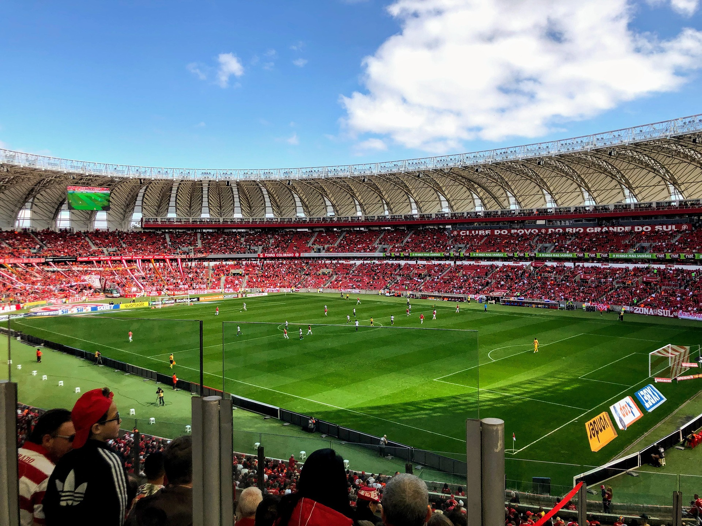

Esporte
Rodada decisiva define os finalistas do campeonato
Veja os resultados, os destaques e o que esperar da próxima fase da competição.

Veja os resultados, os destaques e o que esperar da próxima fase da competição.
Entenda os principais pontos da agenda e os impactos esperados para o Brasil.
Continuar lendoOpções gratuitas e pagas para fazer sozinho, em família ou com amigos.
Continuar lendoA WebNews reúne, em um só lugar, os fatos mais importantes do dia: política, economia, esporte, cultura e entretenimento. Nossa equipe seleciona e organiza o conteúdo para que você se informe rápido e com clareza.
Navegue pelas seções no menu superior, use a busca para encontrar um assunto específico e acompanhe os destaques no carrossel. Novas matérias são publicadas ao longo de todo o dia.
Em breve, você poderá salvar matérias para ler depois e receber alertas dos temas que mais acompanha.